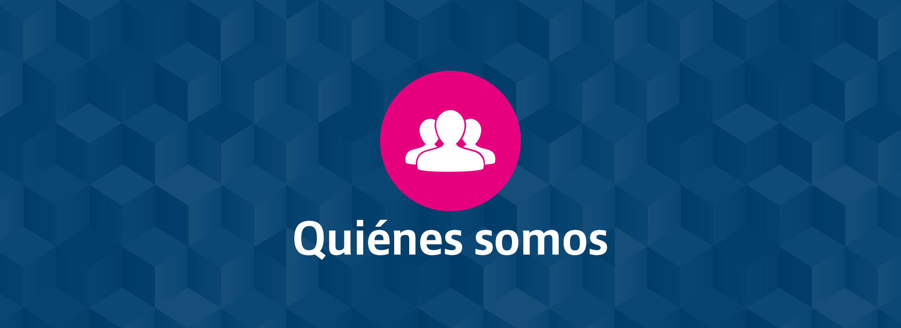
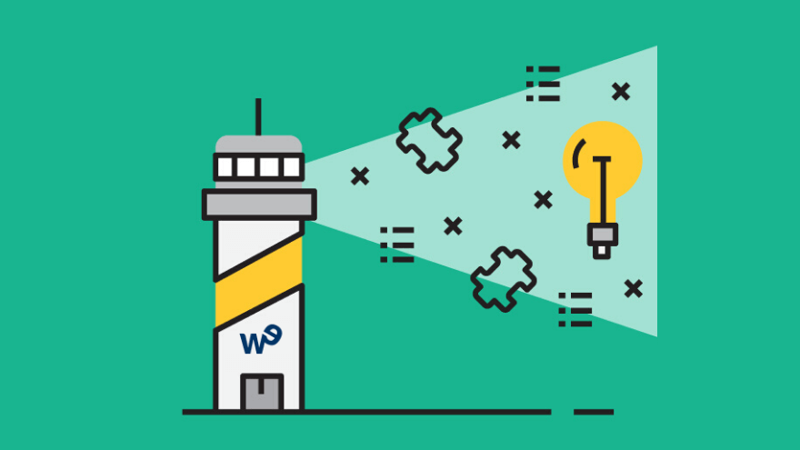

QUIÉNES SOMOS
Somos una empresa colombiana fundada en el año 2022, especializada en servicios de soporte técnico remoto y presencial de equipos de cómputo. Nuestro equipo de profesionales altamente capacitados y comprometidos con la satisfacción del cliente está listo para atender tus necesidades tecnológicas y resolver cualquier problema que puedas enfrentar en tus dispositivos y sistemas informáticos. Contamos con una amplia trayectoria en el mercado y un enfoque centrado en la calidad y la excelencia, lo que nos ha convertido en un referente en el sector de servicios de soporte tecnológico.
VISIÓN
Nuestra visión es convertirnos en el proveedor líder de soluciones de soporte tecnológico en Colombia, ofreciendo servicios de alta calidad que impulsen el crecimiento y la eficiencia de nuestros clientes. Aspiramos a ser reconocidos por nuestra excelencia en el servicio al cliente, la innovación en tecnología y la constante búsqueda de la mejora continua en todas nuestras operaciones. Buscamos expandir nuestra presencia a nivel nacional e internacional, siendo la primera opción para las empresas y usuarios que buscan soluciones confiables y efectivas en el ámbito tecnológico.
MISIÓN
Nuestra misión es brindar soluciones integrales de soporte técnico para equipos de cómputo, tanto de forma remota como presencial, con rapidez, eficiencia y profesionalismo. Nos esforzamos por ofrecer servicios confiables y accesibles que contribuyan al óptimo funcionamiento de los sistemas tecnológicos de nuestros clientes, permitiéndoles alcanzar sus objetivos de negocio de manera segura y efectiva. A través de nuestro compromiso con la innovación y la excelencia en el servicio, buscamos superar las expectativas de nuestros clientes y ser su aliado estratégico en el ámbito tecnológico, proporcionando soluciones personalizadas y adaptadas a sus necesidades específicas.
COFUNDADOR
Miguel Angel Marichal Prieto
Bogotá, Colombia
27 Años
Técnico en Mantenimiento de Equipos de Cómputo desde 2021, graduado en el SENA.